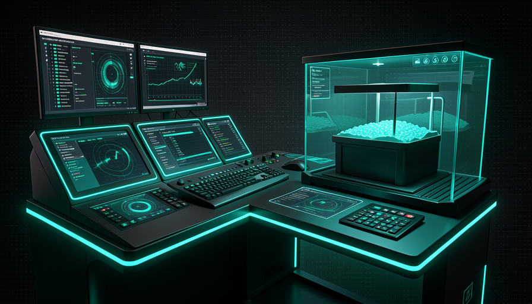
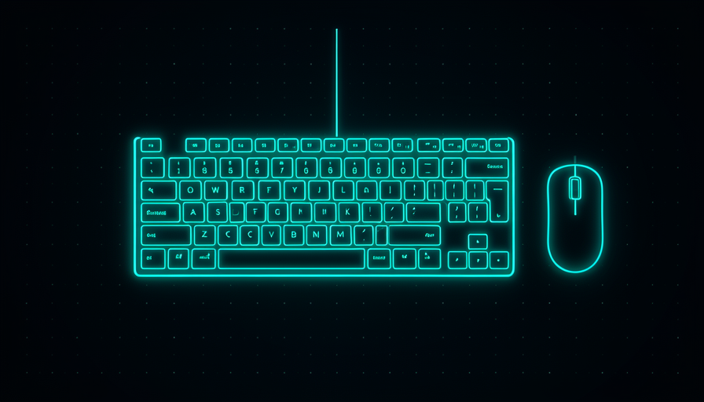

📖 Glossário vivo (leia antes — volte sempre que precisar)
Este módulo é uma receita pronta pra copiar. Antes de montar, fixe os termos novos que aparecem no setup AFK do Matt Pocock:
🖥️ Claude Code + Opus 4.8 medium
🧠 Imagine assim: antes de mandar a equipe construir a casa inteira, o engenheiro senta com você na obra, desenha a planta e levanta a primeira parede com a própria mão — pra garantir que o resto siga certo. É o que o Matt faz localmente com o Claude Code antes de soltar o resto do trabalho AFK.
O coração do setup do Pocock é simples e nada exótico: ele usa o Claude Code rodando Opus 4.8 em medium effort. Repare no detalhe: ele não usa o modelo mais "esforçado" disponível por padrão (e, nas palavras dele, "NÃO Fable"). O nível medium é o ponto de equilíbrio — bom o bastante pra planejar e implementar, sem gastar tokens demais. Lembre da Trilha 1: o resultado é 50/50 entre modelo e harness, então não vale a pena queimar o orçamento inteiro só subindo o "effort" do motor.
Há também uma disciplina de paciência com modelo novo: o Matt espera cerca de 1 mês antes de adotar um modelo recém-lançado (fez exatamente isso com o Opus 4.5). Por quê? Porque trocar de motor toda semana é o erro do vibe coder da Trilha 1 — você gasta tempo re-otimizando em vez de construir. O Claude Code local serve pra duas coisas no fluxo dele: (1) planejar a tarefa com você junto (human-in-the-loop) e (2) fazer parte da implementação ali mesmo, quando é algo complexo ou ainda não bem definido. O grosso repetitivo vai pro AFK — que veremos a seguir. Erro comum: achar que "AFK" significa largar tudo sem nunca abrir o Claude Code; na verdade, o trabalho local de planejamento é o que faz o AFK dar certo.
Local: Claude Code + Opus 4.8 medium planeja e faz parte. O repetitivo vai pro AFK.

⚠️ Erro comum de iniciante
Adotar o modelo mais novo no dia do lançamento e maximizar o "effort" achando que isso resolve tudo. O Matt espera ~1 mês e fica no medium de propósito — o ganho real vem do harness, não de torrar tokens no motor.
Em 1 frase: Claude Code + Opus 4.8 medium, local, pra planejar e fazer parte — o resto vai pro AFK.
🛰️ AFK via sandbox
🧠 Imagine assim: você deixa um robô de limpeza solto em casa enquanto sai. Se ele só pode mexer num cômodo trancado (a sandbox), tudo bem deixá-lo trabalhando sozinho. Se ele pode entrar em qualquer lugar — inclusive na sua gaveta de documentos — você não dorme tranquilo.
A maior parte do trabalho do Matt é AFK: ele dispara o agente e sai. Mas há uma regra de ouro que ele não negocia: AFK só dentro de sandbox. Um sandbox é um ambiente fechado, separado do seu computador de verdade. Sem ele, um agente rodando sozinho pode fazer estrago real — nas palavras do próprio Pocock, pode "deletar seu home directory" (apagar a sua pasta de usuário) ou "exfiltrar env vars" (vazar suas variáveis de ambiente — onde ficam senhas, tokens de API, chaves). Não é paranoia: é o agente agindo sem ninguém olhando.
A lógica é direta: quem está no loop (você acompanhando) pode aprovar cada passo perigoso; quem está AFK não tem ninguém pra aprovar nada — então o ambiente precisa ser seguro por construção. O sandbox dá isso: o agente lê o código, edita, roda testes, faz commits — mas tudo dentro da caixa. Se algo der errado, você joga a caixa fora e nada do seu sistema foi afetado. É por isso que a frase do Matt é "AFK is just incredible — takes a bit of setup, but then it goes": o "bit of setup" é justamente montar o sandbox uma vez. Depois, escala sozinho.
Recuperação rápida: por que o Matt só roda AFK dentro de sandbox?
Em 1 frase: AFK só dentro de sandbox — sem ninguém olhando, o ambiente precisa ser seguro por construção.
🏰 Sand Castle setup
🧠 Imagine assim: uma central de despacho de táxis. Cada corrida (issue) entra na fila, um carro disponível (um sandbox) pega a corrida e leva sozinho. A central não dirige — ela distribui e acompanha. Sand Castle é a central; cada carro é um sandbox.
A ferramenta concreta que o Matt usa pra esse fluxo é o Sand Castle. Ela faz duas coisas: (1) roda os agentes dentro de sandboxes — e aqui você escolhe o "motor" do sandbox: Docker ou Podman (na sua máquina) ou Vercel sandboxes (na nuvem); e (2) organiza o trabalho como fila de issues — cada tarefa é uma issue que um sandbox pega e resolve. Como vimos na Trilha 4, o Matt pensa o desenvolvimento como uma fila de tarefas, não um loop: "all development is just a queue of tasks".
Na prática, o setup mínimo do Sand Castle é: instalar a ferramenta, ter Docker (ou Podman) rodando, apontar pro seu repositório, e dar a config do agente — qual ferramenta de codar (Claude Code), qual modelo (Opus 4.8) e qual effort (medium). A partir daí você joga uma issue ("implemente X") e o Sand Castle cria um sandbox fresco, faz o agente trabalhar lá, e produz commits. Por que isso é tão poderoso? Porque o "bit of setup" é pago uma única vez — depois, abrir uma nova tarefa é tão barato quanto criar uma issue. Erro comum: tentar rodar o Sand Castle sem ter o Docker/Podman ativo — sem o motor de contêiner, não há sandbox pra colocar o agente dentro.
Indo mais fundo (opcional): Docker, Podman ou Vercel — qual escolher?
Docker é o padrão de mercado pra contêineres — provável que você já tenha. Podman é uma alternativa muito parecida, sem precisar de um serviço rodando em segundo plano com privilégios (alguns preferem por segurança). Ambos criam o sandbox na sua máquina — bom pra começar, mas consome a CPU/RAM do seu PC. Já os Vercel sandboxes rodam na nuvem: você não gasta recurso local e paraleliza sem limite de máquina — foi por isso que o Matt chama de "not worried about local resources". Regra prática: comece com Docker local pra entender o fluxo; migre pra Vercel/nuvem quando quiser muitos agentes ao mesmo tempo.
Em 1 frase: Sand Castle é a central que pega issues da fila e roda cada uma num sandbox (Docker, Podman ou Vercel).
⚡ Paralelizar com segurança
🧠 Imagine assim: um restaurante com 5 cozinhas separadas, cada uma com seu fogão. Você pode preparar 5 pratos ao mesmo tempo — e se uma cozinha pegar fogo, as outras 4 seguem. É isso que sandboxes isolados dão: paralelismo sem que um agente atrapalhe o outro.
Aqui está o pulo do gato do setup AFK: como cada agente roda no seu próprio sandbox isolado, você pode rodar muitos ao mesmo tempo sem que um pise no outro. O Matt resume: rodar agentes via "Sand Castle on GitHub Actions — unreasonably effective, parallelize as much as you want, not worried about local resources" (irracionalmente eficaz, paralelize o quanto quiser, sem se preocupar com recursos locais). É o "two, three, four, five of me" da Trilha 4 virando realidade: vários "vocês" trabalhando em paralelo.
A peça que destrava o paralelismo na nuvem é o GitHub Actions. Em vez de cada agente comer CPU e RAM do seu notebook, eles rodam nos servidores do GitHub — então a quantidade não esbarra na sua máquina. Mas atenção à ordem das duas regras: paralelizar só é seguro porque cada agente está isolado. Sem sandbox, rodar 5 agentes soltos ao mesmo tempo é 5× mais chance de estrago. Erro comum: "paralelizar pra ir mais rápido" desligando o isolamento — você troca velocidade por risco de apagar o repositório. A receita certa é: isole primeiro, paralelize depois.
🔬 Exemplo resolvido: uma manhã AFK do Matt
Cenário concreto, do plano à entrega, em paralelo e com segurança:
- Local (Claude Code, Opus 4.8 medium): de manhã ele planeja 3 tarefas com você junto e abre 3 issues no Sand Castle.
- Dispara AFK: Sand Castle cria 3 sandboxes (via GitHub Actions, na nuvem) — um por issue. Ele fecha o notebook e vai tomar café.
- Em paralelo: sandbox 1 implementa a feature, 2 corrige o bug, 3 refatora. A issue 2 quebra um teste — só o sandbox 2 falha; os outros 2 terminam normalmente.
- Volta: 2 PRs prontos pra revisar, 1 marcado como "precisa de humano". Nada tocou na máquina dele. Ele puxa os commits bons (tópico 5).
Em 1 frase: isole primeiro, paralelize depois — sandboxes isolados deixam muitos agentes rodarem juntos sem risco.
⬇️ Puxar commits de volta
🧠 Imagine assim: a cozinha (sandbox) preparou o prato, mas ele não chega à sua mesa sozinho — o garçom traz a bandeja, você prova e só então aprova servir aos clientes. Puxar os commits é o garçom; revisar antes de mesclar é você provando.
O agente trabalhou isolado e gerou o resultado dentro do sandbox. Agora falta a última peça: trazer esse resultado de volta pro seu repositório. Em Git, esse resultado vem como commits numa branch própria, embrulhados num PR (pull request). O fluxo do Matt encaixa direto na Trilha 4: o agente AFK produz um PR como saída, e o PR é exatamente o ponto onde você entra pra revisar antes de mesclar. Você não pega o código cru do sandbox — você pega um PR limpo, lê o diff, aprova (ou pede ajuste).
Esse é o checkpoint de review empurrado pra direita da Trilha 4: o humano não fica no meio de cada passo; ele entra no fim, quando já existe um PR pronto pra avaliar. Para os PRs bons, você faz o merge; para os duvidosos, pede outra rodada ou assume você mesmo. Erro comum: deixar os commits "presos" no sandbox e nunca trazer — ou, no extremo oposto, configurar auto-merge sem ninguém olhar. O ponto de equilíbrio do Matt é: agente produz o PR, humano aprova o PR. Abaixo, o resumo do fluxo de saída pra você copiar.
# O agente AFK rodou no sandbox e abriu um PR. Traga pra revisar: # 1) ver os PRs que os agentes AFK abriram gh pr list --label "agent:implement" # 2) baixar a branch do PR pra inspecionar localmente gh pr checkout 795 # nº do PR aberto pelo agente # 3) ler o que mudou ANTES de aceitar (você é o checkpoint) git diff main...HEAD # 4a) aprovou? faça o merge gh pr merge 795 --squash --delete-branch # 4b) precisa de ajuste? volte pro Claude Code local e itere # (ou peça outra rodada AFK na mesma issue)

Em 1 frase: o agente produz um PR; você lê o diff e dá o merge — o commit volta pelo checkpoint, não cru.
📋 Seu setup mínimo
🧠 Imagine assim: você não precisa da garagem completa de F1 pra começar a treinar — precisa de um carro que anda e de uma pista segura. O setup mínimo abaixo é esse "carro que anda": o básico do AFK do Matt, sem firula.
Fechando o módulo: aqui está o setup mínimo reunido num só lugar, pronto pra copiar. São três blocos — (1) a config do Claude Code fixando Opus 4.8 em medium effort; (2) o comando pra rodar o agente AFK em sandbox (Sand Castle apontado pro seu repo); e (3) os passos pra puxar os commits de volta. É o esqueleto exato do fluxo do Matt, reduzido ao essencial. Comece por aqui hoje, rode uma tarefa AFK pequena, e vá crescendo a fila.
# ── 1) CONFIG DO CLAUDE CODE: Opus 4.8 em medium effort ──
# ~/.claude/settings.json (modelo + esforço fixos, como o Matt usa)
{
"model": "claude-opus-4-8",
"effort": "medium"
}
# (ou na sessão) → /model claude-opus-4-8 | /effort medium
# uso local: planejar + parte da implementação, você junto.
# ── 2) RODAR O AGENTE AFK EM SANDBOX (Sand Castle) ──
# pré-requisito: Docker (ou Podman) ativo → docker info
# instalar e apontar pro seu repo:
npx sandcastle@latest init # cria a config no projeto
# disparar uma tarefa AFK isolada (1 sandbox por issue):
sandcastle run \
--issue 795 \ # a tarefa da fila
--sandbox docker \ # docker | podman | vercel
--agent claude-code \ # ferramenta de codar
--model claude-opus-4-8 \
--effort medium
# paralelizar: dispare várias issues; cada uma vira um sandbox isolado.
# ── 3) PUXAR OS COMMITS DE VOLTA (você é o checkpoint) ──
gh pr list --label "agent:implement" # PRs que os agentes abriram
gh pr checkout 795 # baixar pra inspecionar
git diff main...HEAD # LER o diff antes de aceitar
gh pr merge 795 --squash --delete-branch # aprovou? merge.
Recuperação rápida: qual é a ordem certa do setup AFK mínimo do Matt?
Em 1 frase: config do modelo + um comando AFK em sandbox + puxar o PR de volta = o AFK do Matt no essencial.
🧾 Resumo do Módulo
Próximo módulo:
5.5 — Action de review + cron de security: a automação que se cuida sozinha (esqueleto da Action, comentar no PR, cron diário rotativo).